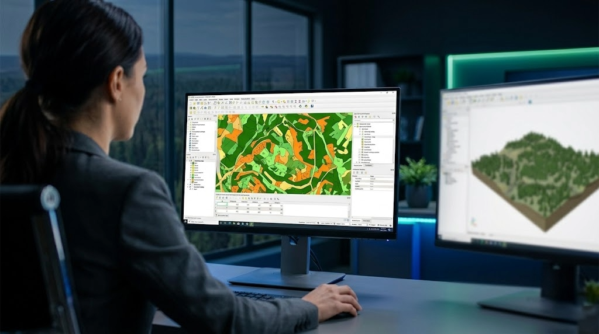

Des extensions puissantes pour ArcGIS Pro, QGIS et ArcMap qui simplifient votre travail quotidien en foresterie.
Demander une démonstration gratuitePeu importe l'outil SIG que vous utilisez, SIGLogix s'y intègre. Pas besoin de changer vos habitudes.
Pour les utilisateurs d'ArcGIS Pro. Accédez à tous les outils SIGLogix directement dans votre environnement Esri, sans quitter votre flux de travail habituel. Interface moderne et barre d'outils rapide incluse.
Pour les utilisateurs de QGIS. Profitez de la puissance de SIGLogix sur la plateforme libre la plus populaire en foresterie. Toutes les fonctionnalités, sans frais de licence SIG supplémentaires.
Pour les utilisateurs d'ArcMap. Vous n'avez pas encore migré vers ArcGIS Pro? Aucun problème. Continuez à travailler avec vos outils actuels tout en bénéficiant des fonctionnalités SIGLogix.
Des gains concrets pour votre équipe de géomatique, dès le premier jour.
Fini les menus complexes. Une barre d'outils rapide met vos opérations les plus fréquentes à portée d'un seul clic. Vos géomaticiens gagnent du temps sur chaque tâche, chaque jour.
Créez des cartes hors ligne que vos équipes terrain peuvent consulter directement en forêt, sans connexion internet. Les données dont ils ont besoin, là où ils en ont besoin.
Publiez vos cartes forestières sur le web pour que toute votre équipe consulte les mêmes données à jour. Entrepreneurs, sous-traitants et gestionnaires voient tous la même information.
Générez vos plans de sondage, vos données d'intervention et vos rapports conformes aux normes du ministère, automatiquement. Plus de saisie manuelle, moins d'erreurs, plus de tranquillité d'esprit.
Placez un point sur la carte et laissez SIGLogix faire le reste. L'analyse du bassin versant, les données de précipitation et la recommandation du bon diamètre de ponceau se font automatiquement.
Envoyez vos cartes directement sur les appareils GPS de vos équipes terrain. Pas de transferts compliqués, pas de logiciels intermédiaires. Du bureau au GPS en quelques clics.
SIGLogix n'est pas un outil SIG générique. C'est une suite d'extensions pensée et développée spécifiquement pour les réalités de la foresterie au Québec. Les normes du MRNF sont intégrées directement dans les outils : plans de sondage avec calcul automatique du nombre de placettes, grilles systématiques conformes, génération des données d'intervention avec les couches requises et validation intégrée.
L'interface est entièrement bilingue (français et anglais) et offre 4 thèmes visuels pour un confort optimal au quotidien. Vos géomaticiens peuvent aussi analyser les données de récolte provenant des principales marques d'abatteuses utilisées au Québec.

| Fonctionnalité | ArcGIS Pro | QGIS | ArcMap |
|---|---|---|---|
| Barre d'outils rapide | ✓ | ✓ | ✓ |
| Cartes hors ligne | ✓ | ✓ | ✓ |
| Publication web | ✓ | ✓ | ✓ |
| Conformité MRNF | ✓ | ✓ | ✓ |
| Dimensionnement de ponceaux | ✓ | ✓ | — |
| Export GPS Garmin | ✓ | ✓ | ✓ |
| Analyse de données de récolte | ✓ | ✓ | — |
| Interface bilingue FR/EN | ✓ | ✓ | ✓ |
Des entreprises forestières à travers le Québec utilisent SIGLogix au quotidien pour simplifier leur géomatique.
« Depuis qu'on utilise SIGLogix, nos géomaticiens passent moins de temps dans les menus et plus de temps à produire des cartes de qualité. La conformité MRNF se fait pratiquement toute seule. »
— Un client forestier du Centre-du-Québec
Demandez une démonstration gratuite et découvrez comment SIGLogix peut simplifier le quotidien de votre équipe de géomatique.
Contactez-nous Demander une démo